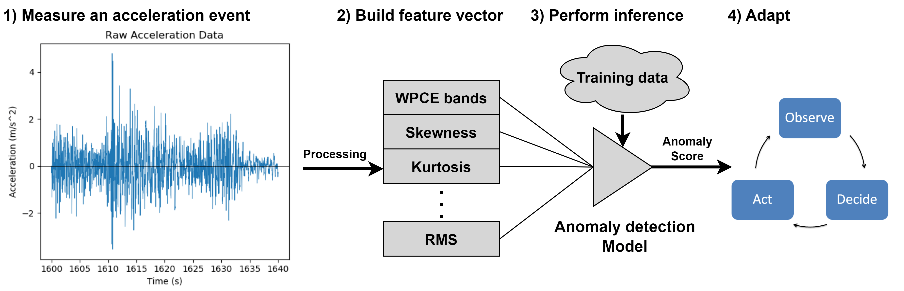
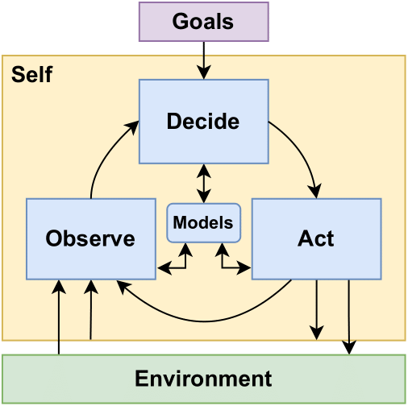
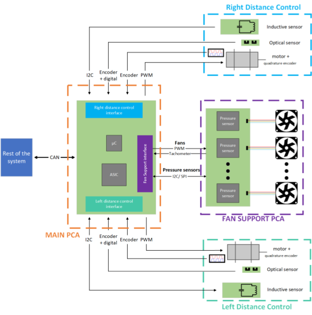
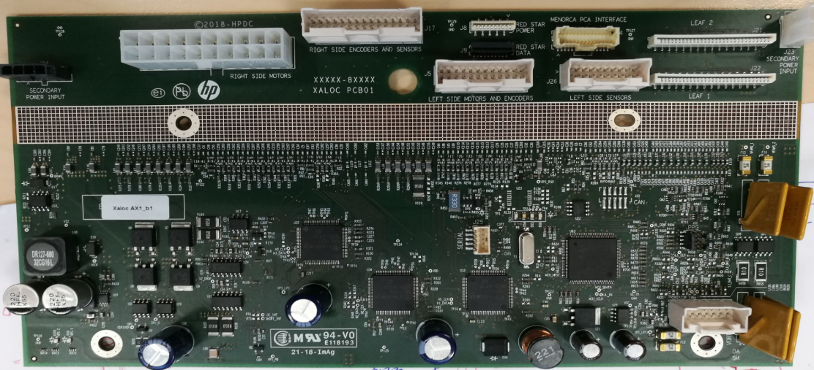
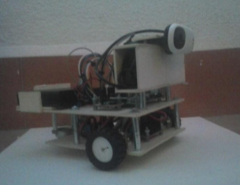
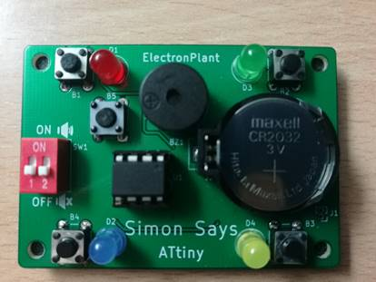

David Arnaiz
Embedded Software Engineer
Keywords
About me
Who Am I?
I'm an experienced embedded systems engineer with 8+ years of working experience and a PhD in dynamic energy management of wireless sensor nodes. I'm passionate about the design and development of intelligent embedded systems, additionally I have a proven track record with the complete design process from the electronic schematic design to the implementation of the firmware application.
Profile
- Embedded system engineer with 8+ years of experience working as a part of international and multidisciplinary teams.
- Proven track record with:
- Designing embedded software architectures.
- C drivers and Real-time FreeRTOS applications.
- Mixed-signal electronic schematic design.
- Generating agentic workflows to automate routine tasks.
- Team player, working as part of an international and multidisciplinary teams.
- Great communication, coordination and interpersonal skills.
- Focused on continuous improvement and innovation, delivering contributions to meaningful projects.
Skills
Programming Languages
Miscellaneous
- Serial protocols: I2C, SPI, UART.
- Development tools: VS Code, Eclipse, KiCad, Cadence.
- CI/CD: Git.
- Dev: VS Code Copilot.
- AI: Developed custom agentic workflows using VSCode Copilot to automate routine tasks, increasing development efficiency.
- Measurement tools: oscilloscope, logic analyzer, power monitor, GDB, SWD.
- Languages:
- Spanish: Native
- English: Professional Proficiency (daily corporate use, written publications).
Work Experience
Embedded Software Engineer [Dec. 2019 - Present]
WorldSensing Barcelona, Spain
- Defined and developed the FW architecture for the vibration node featuring a configurable data processing pipeline, and integrating different firmware modules and RTOS tasks.
- Developed multiple sensor drivers, fully unit tested FW modules, and complete features for low-power, LoRa-based wireless sensor nodes.
- Designed and implemented event-driven sensing feature for the complete wireless sensor family.
Electronic Designer [Oct 2018 - Dec 2019]
Rolls-Royce - Control Systems Birmingham, UK
- Designed lightning strike protection circuits for high-reliability aircraft electronics within the Engine Monitoring Unit (EMU).
- Authored hardware design documents and guidelines for safety-critical systems.
- Conducted hands-on laboratory testing of electronic prototypes.
R&D Electronic Engineer [Sept. 2016 - Sept. 2018]
HP - Large Format Printing Barcelona, Spain
- Part-time while completing my Master’s degree as part of the HP R&D academy program.
- Owned the electronic schematic design for printer mixed-signal, mechatronics PCBs based on STM32 MCUs.
- Developed custom HW and FW prototypes for inductive and optical sensing.
- Defined hardware diagnostic guidelines and printer self-diagnostics schemes.
Education
Ph.D. in Electronic Engineering [Sept. 2019 - July. 2024]
Polytechnic University of Cataluña (UPC) Barcelona, Spain
- Grade of excellence.
Brief My research focused on Dynamic Energy Management (DEM) for resource-constrained wireless sensor nodes in IoT networks. DEM enables wireless sensor nodes to optimize their resource utilization by dynamically adjusting their behavior based on their changing operating conditions. In my thesis I mainly focus on the use of Self-Awareness to enable the implementation of more complex adaptive behaviors directly at the sensor node level. In this context, a device is considered to be self-aware if it's able to monitor itself and its environment, use this information to learn and maintain models on an ongoing basis, and use this information to make intelligent decisions at runtime based on its high-level operational goals.
M.Sc. in Electronic Engineering [Sept. 2016 - Sept. 2018]
Polytechnic University of Cataluña (UPC) Barcelona, Spain
- GPA of 3.752 (out of 4).
- Selected for HP’s R&D academy program, completing Master’s degree coursework while gaining hands-on R&D experience part-time.
B.Sc. in Electronic Engineering [Sept. 2012 - Sept. 2016]
University of Granada (UGR) Granada, Spain
- GPA of 3.491 (out of 4).
Research
Publications
This is a hub page linking to my research publications along with a brief summary for each of them. For more updated information checkout my google scholar's profile.
Conference Proceedings
Summary: This work proposes a lightweight monitoring method for wireless sensor nodes that dynamically adjusts the monitoring efforts based on the perceived temporal correlation of the monitored data, and complies with guarantees of operation in the form of a target battery lifetime. The proposed monitoring method was able to outperform the equivalent naive monitoring methods of equivalent battery life by reducing the \ac{mse} of the reconstructed signal by 42%. The monitoring method proposed in this publication manages two competing goals, maximizing the monitoring accuracy (through the relevance-aware behavior), and achieving the target battery lifetime (through the energy-aware behavior). Furthermore, it was shown to be able to comply with the battery lifetime target.
Relating Context and Self Awareness in the Internet of Things
Summary: Self-aware sensor nodes need to be integrated into a wider IoT network interacting with fog and cloud servers. While self-awareness has started gaining prominence in the field of wireless sensor nodes, a similar concept, i.e. context awareness, has gained more prominence in managing the infrastructure at the higher hierarchical levels of the network. {[C.II]} explores the similarities and differences between both approaches, proposing a reference architecture combining both approaches and taking into consideration the differences in response time and resource availability across the IoT hierarchy to improve upon existing approaches.
Journal Publications
Summary: The work from [C.I] was only able to adjust the monitoring period of the sensor node. Improving the proposed monitoring method would require adding the availability of adjusting multiple parameters at the same time. This work, extends [C.I] by allowing the node to adjust the monitoring period of the node and the error threshold in a dual predictor scheme. The proposed monitoring method was able to reduce the \ac{mse} of the reconstructed signal by up to 19\/\% with regards to the same monitoring method which only considers the battery life for the adaptive behavior, and by up to 16% compared with the other method with only one control parameter.
On Anomaly-Aware Structural Health Monitoring at the Extreme Edge
Summary: One of the biggest challenges for implementing self-awareness for SHM applications is the complexity of modeling the monitored structure at the sensor node level. {[C.IV]} proposes the use of lightweight anomaly detection models executed directly by the sensor to compute the anomaly score of the monitoring data, which can then be used by the self-awareness module to guide the adaptive behavior of the sensor node. The proposed anomaly-aware monitoring method has been shown to be able to identify severe and light damages on the structure and was showcased in the context of a more complete self-aware application.

Block diagram of the anomaly detection algorithm from [C.IV]
Datasets
Raw Interior Temperature Time Series
Summary: The timeseries data this dataset was obtained using a temperature sensor in an interior environment placed near a window in Barcelona. The data was collected for approximately 5 days with a sampling rate of 10\/s, resulting in 432433 measurements. The temperature shows daily temperature shifts caused by the sensor being exposed to the sun, making the data more or less dynamic. This dataset was collected to support [C.I] to simulate real sensor measurements.
Raw Atmospheric Pressure, Relative Humidity and Light Intensity Data timeseries
Summary: The dataset in this dataset has two different timeseries of Atmospheric pressure, relative humidity and light intensity data, each recorded at different times. Both datasets have been collected with a sampling period of 10s over several weeks. The first dataset is composed of 302845 samples, and the second of 504862 samples. The first dataset is intended to be used for training to set the necessary parameters and the second dataset to validate the monitoring method. This dataset was collected to support {[C.III]} to simulate real sensor measurements. The relative pressure data has the lowest variability of all the data, the relative humidity data has intermediate variability, and the light intensity data has significantly larger variability. Thus these data test any monitoring algorithm with data showcasing different levels of variability.
Summary: This dataset was collected during the experimental evaluation of the anomaly-aware monitoring method proposed as part of [C.IV]. The benchmark is composed of different monitoring events collected using two different nodes mounted on the benchmark structure built and maintained by the Department of Civil and Environmental Engineering at the Polytechnic University of Catalonia (UPC). The dataset contains the 3-D acceleration data measured by the nodes, the feature vector computed by the nodes, and (for the test cases) the inference results from their anomaly detection models. During the evaluation tests 275 different monitoring events were captured with different levels of damage on the benchmark structure.
Thesis & Dissertations
Ph.D. Thesis
Brief Summary: This is my Ph.D. Thesis in Dynamic Energy Management (DEM) in wireless sensor nodes. Wireless sensor nodes in an IoT network are resource constrained devices, particularly regarding their limited battery life. DEM enables wireless sensor nodes to optimize their resource optimization by dynamically adjusting to their changing operating conditions. For example, if a sensor node is monitoring for wildfires the monitoring requires are not the same after a rainy day when the risk of fire is low, than during the summer season when the fire risk is high. Despite the success in DEM over the past few decades, most of the existing methods rely on simple static behaviors or only monitor a few parameters to guide their adaptive behavior. The work presented in this thesis, research the use of Self-Awareness to enable the implementation of more complex adaptive behaviors directly at the sensor node level. In this context, a device is considered to be self-aware if it's able to monitor itself and its environment, use this information to learn and maintain models in an ongoing basis, and use this information to make intelligent decisions at runtime based on its high-level operational goals.

Observe Decide Act (ODA) loop
M.Sc. Thesis
Design and integration of control electronics for distance and airflow management
Brief Summary: This is my M.Sc. Thesis I did as part the HP's R&D academy program. This thesis summarizes the work I did designing the control electronics for a distance control system and an airflow management module. In both cases my work consisted in the electronic schematic design (component selection, simulation work, circuit investigation, etc.), and the initial set of validation tests and integration with other components designed by other teams on a printer prototype. The designed PCBs integrated analog sensors, motor control stages, and an STM microcontroller. These PCBs are part of a larger system, thus integration with other modules through serial interfaces (UART, SPI, I2C) voltage rails, auto diagnostics, etc.

Block diagram of my M.Sc. project

One of the designed PCBs M.Sc. project
B.Sc Final Project
Development of a Vision Guided Autonomous Robot - Desarrollo de un robot autónomo guiado por visión
Brief Summary: This is my B.Sc. Thesis the document is only available in spanish. This document describes my work developing an autonomous robot based on a Raspberry Pi, which is able to navigate using a camera as its main sensor along with odometry sensors. The navigation algorithms is composed of two main parts. First, the obstacle avoidance subsystem based on color and edge detection on the camera stream. Second, the Visual Self Localization and Mapping (VSLAM) algorithm capable of identifying custom visual targets, generate a map and locate itself in that map.

Robot made as part of my B.Sc final project
Projects
Projects
My projects can be found on my github page.
Here is a quick overview:
- Self-Aware_Sensor_Node_Architecture written in C as a support for my PhD work. This is a basic implementation of the agent-based architecture for the development of wireless sensor nodes.
- File manager for CLI applications written in Rust as a support for another personal project I made while learning Rust. This is a simple program to help CLI applications load a given file or save a file. With some helpful features to list all the files in the current directory, save files sequentially for files revisions, etc.
- ESP_Project_Template is a template repository for ESP32 projects using IDF and FreeRTOS and MkDocs documentation. This project showcases a simple FreeRTOS application.
- Simon Says ATtiny is the implementation of the Simon Says game with a simple ATtiny45/85 IC. This project contains the PCB and the firmware developed in the Arduino platform.
- STM32 drivers these are some C++ drivers for the MPU-6050 I2C sensors and serial print, written in C++.
- MPU-6050 Arduino driver C++ Arduino driver for the MP6050 I2C sensor.
- VSLAM Raspberry Pi Python implementation of the VSLAM algorithm and robot control software for my B.Sc final project.

Complete assembly of the ATtiny Simon Says game
Blog
Blog
This page is under construction 
Archive
Project Info
Repository
The reposiroty with the web's source code is available on my GitHub. The page is build using the Material theme for MkDocs.
License
I decided to split the license based on the contents:
- The software components (mkdocs.yml, CSS files, etc.) are licensed under the MIT license.
- The website content (personal information, images, text, etc.) is licensed under the Creative Commons Attribution-NonCommercial-ShareAlike 4.0 International.